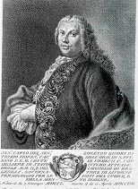
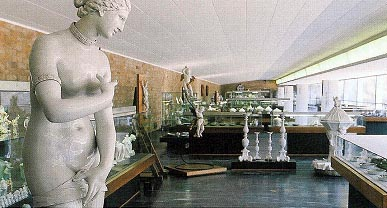
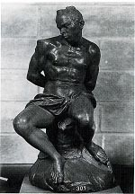
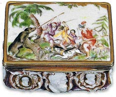
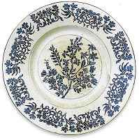
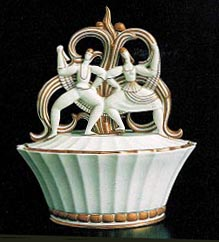
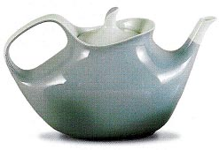

| Museo Richard-Ginori
Article by Oliva Rucellai
| 
Carlo Ginori,
founder of the
Doccia porcelain factory. |
In 1737 the Tuscan Marquis Carlo
Ginori set up a porcelain factory next to his countryside
residence. Doccia was the name of the place which was located
in the borough of Sesto
Fiorentino, six miles north of Florence, in Italy.
That’s why Ginori porcelain is often referred to as
Doccia (to be pronounced as ‘Dotcha’).
At the time of its foundation only two other European hard-paste
porcelain factories were operating: Meissen in Germany, and
Du Paquier, in Austria. Hard-paste porcelain making was a
recent discovery in Europe and a risky technical and economical
challenge: Carlo Ginori (1702-1757) stands among the pioneers
of this particular kind of ceramic which is even more remarkable
considering that the factory he founded is still active today
under the name Richard-Ginori.
This significant change in company title dates back to 1896
when, after five generations of Ginori ownership and leadership,
the Doccia factory passed to Richard, a fast-expanding Milanese
ceramic industry. The double name Richard-Ginori reflects
the peculiar coexistence of two different identities in the
same company: the artistic manufactory and the industrial
one. |
| In 1950 the original factory site was abandoned
and a new, more rational plant was built in the plain by the
railway, 2 miles away from the old one, which stood at the foot
of the woody Mount Morello. In the old factory neighborhood
the parish church of S.Romolo a Colonnata still hosts an impressive
Ginori painted porcelain altar (1785) which is well worth a
visit. In 1965 the Doccia Museum, once located in the 18th century
part of the old factory, moved to its present location, in purpose-built
premises next to the new plant. |

Museo Richard-Ginori
della Manifattura di Doccia, main gallery
|
| 
G.B. Foggini,
(after Ferdinando Tacca),
Chained Moor , wax, ht. 40 cm., 18th C. |
Among the most treasured sections of the Museum
collection is a series of late baroque waxes. They are original
18th century casts by the best Florentine sculptors of the time:
Giambattista Foggini and Massimiliano Soldani Benzi. The bronze
versions of these works are scattered in Museums around the
world.
Carlo Ginori acquired the wax casts and, in some cases, the
corresponding moulds from the heirs of Foggini and Soldani Benzi
in order to make porcelain sculptures of superb quality. |
| In the 18th century snuffboxes were among
the most highly sought after items produced at Doccia, so
much so that during the peak of production the factory had
its own silversmith’s laboratory that was dedicated
to assembling the pieces.
Being a collector and a cultivated art lover, Carlo Ginori
conceived an original series of snuffboxes which were decorated
with relief portraits of famous men and women after ancient
cameos and carved gems. They were grouped by categories, as
Emperors, Poets, Warriors or, as in the one illustrated here,
Philosophers. |

Snuffbox with relief cameo
decoration and bear hunting
scene on lid, hard paste porcelain, approx. 1750. |
| 
Plate with ‘stampino’
decoration,
hard-paste porcelain, diam. 24 cm, approx 1750 |
The so called stampino or stencil decoration is
one of the most distinctive of Ginori early production. It remained
in vogue throughout the 18th century. The blue and white colour
combination clearly imitated oriental prototypes but the elegant
flower design was definitely European. This type of decoration
was obtained by laying a perforated stencil directly on the
plate, and then applying the colour. This technique allowed
workers who were not expert craftsmen to produce highly impressive
decorations. |

Bombonnière with
a plastic motif of folk dancing on lid, designed by Gio
Ponti, hard paste porcelain, ht. 19.5 cm, 1925
|
No other single artist has transformed Richard-Ginori’s
production in as radical a way as did Gio
Ponti (1890-1979) from 1923 to 1930. As Artistic Director
he planned a renovation that would involve the shapes and decoration
of the ceramics, as well as the graphic design of the catalogues,
posters, publicity, photos and the logos of the various lines
of products. His style is an original and eclectic interpretation
of the international Art Déco taste. Modern shapes and
patterns are often inspired by Italian cultural and artistic
traditions. Archeological finds, classical architecture, Renaissance
maiolica are only a few of the sources he used to elaborate
his designs. |

Teapot from the Ulpia set,
designed by
Giovanni Gariboldi, hard paste porcelain, ht. 12.6, 1954
|
Giovanni Gariboldi (1908-1971) collaborated with
Richard-Ginori from 1930 to 1970 and produced an extremely varied
range of objects, from limited number series of plates with
elaborate relief decoration to functional everyday use stacking
objects. The Ulpia set, which was presented at the Triennial
of Milan in 1954, is one of his most original and successful
designs. |
The Museum exhibits thousands of objects, including Ginori tin-glazed
earthenware from 18th to 20th centuries, terracotta and plaster
models, watercolors drawings and sketches and even porcelain electrical
insulators. The illustrated works are just a small sample of the
quality of the collection.
Along the hilly side of the road leading from Florence to Prato
there are many Villas overlooking the plain of Sesto Fiorentino.
Now the area is densely populated but in the past it was mainly
occupied by cultivated fields and Florentines aristocrats, such
as Carlo Ginori, loved to build country houses with formal gardens
on the nearby hills. Two of them are open to the public: Villa
di Castello and Villa
Petraia.
For lovers of archeology Sesto offers also two important Etruscan
tombs dating to the 7th century B.C.
Article and images courtesy Oliva Rucellai, curator of Museo Richard-Ginori
della Manifattura di Doccia. © Museo
Richard-Ginori.
More Articles
|